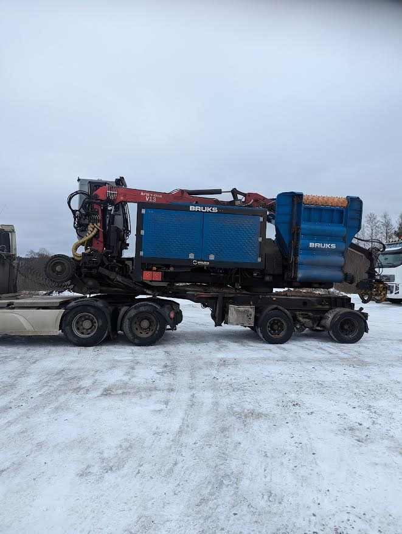

Vi omvandlar rundvirke och grot till flis med en Bruks 1006 flistugg. Vi transporterar med egna lastbilar om behov finns.

Närke Flis AB är etablerat på gränsen mellan Närke och Östergötland, men vårt arbetsområde är där våra tjänster behövs i Sverige.
Vi omvandlar rundvirke och grot till flis med vår Bruks 1006 flistugg.
Vi transporterar flisen med egna lastbilar om behov finns.
Johan Karlsson
Maskinförare / chaufför
Mer än 10 års branschvana – först genom Wåkab i Stockholmsområdet och sedermera NEG i Norge och Sverige.